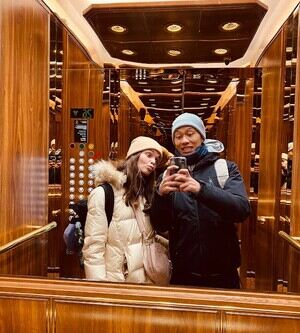

Our Story
We're two students of Information Management from the University NOVA in Lisbon, currently living in the Czech Republic for a semester. We met in the first year of our Bachelor's degree and we got along right away because we share a passion for sports and adventure.
João loves badminton, and this sport has allowed him to travel around the world while playing. Joana loves any kind of sport and doesn't commit to one particular sport. We both love running and have already participated in two races together.